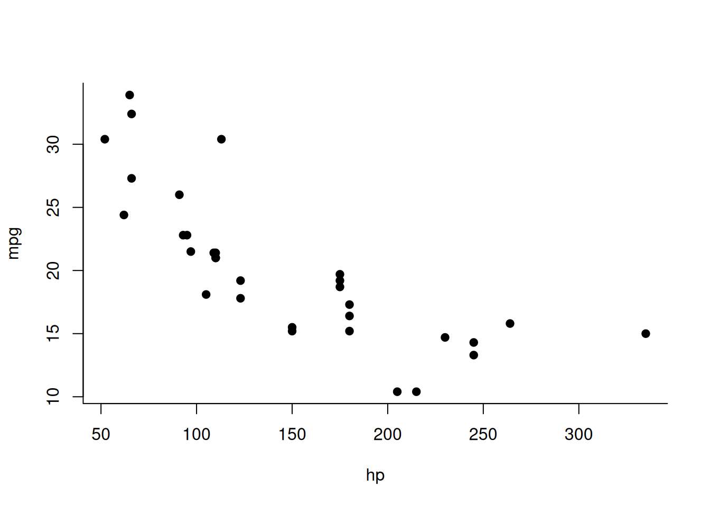
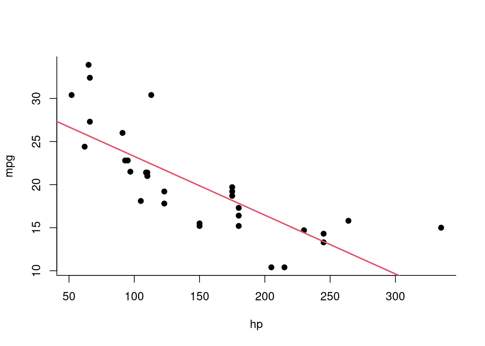
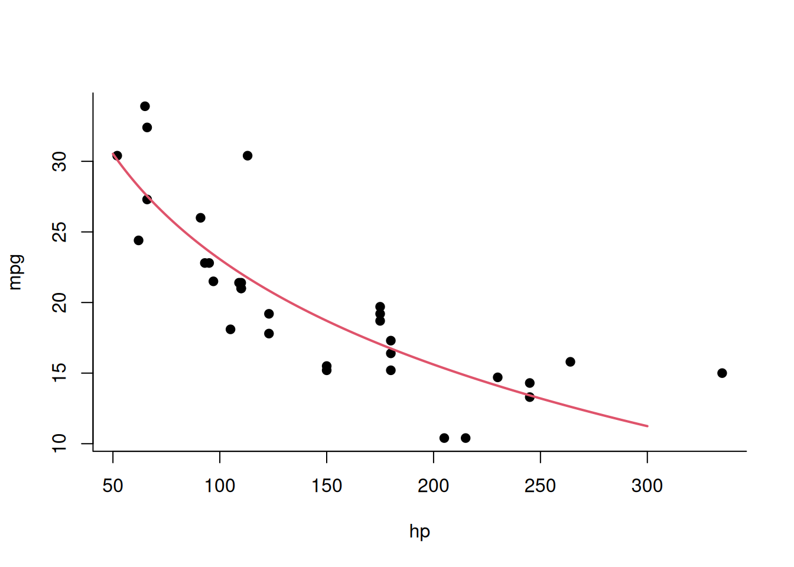
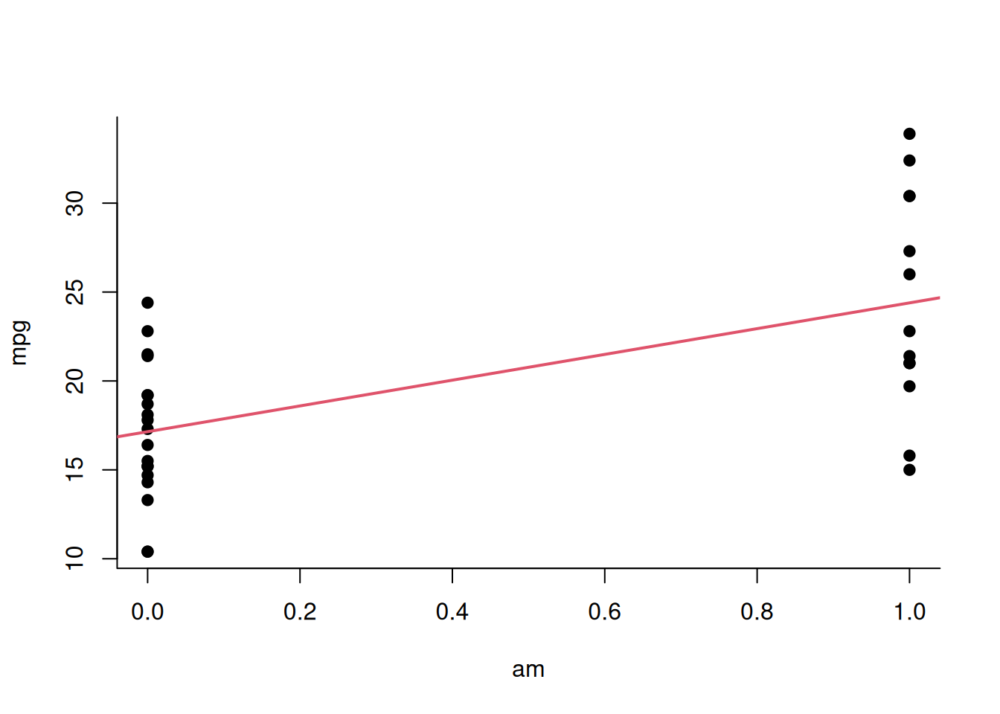
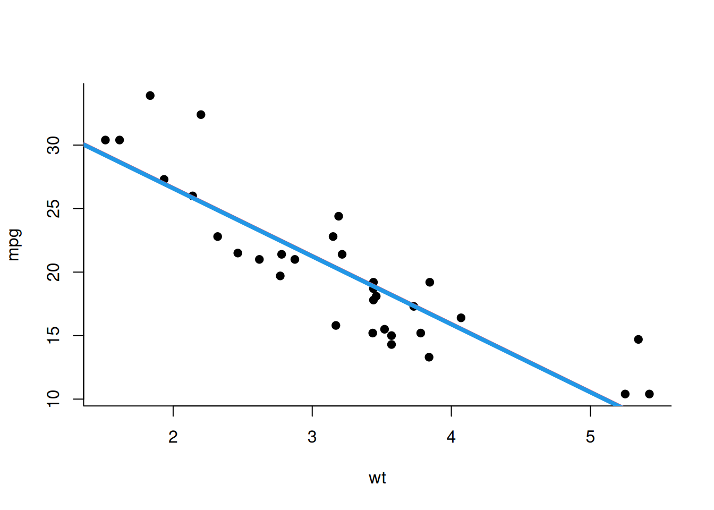
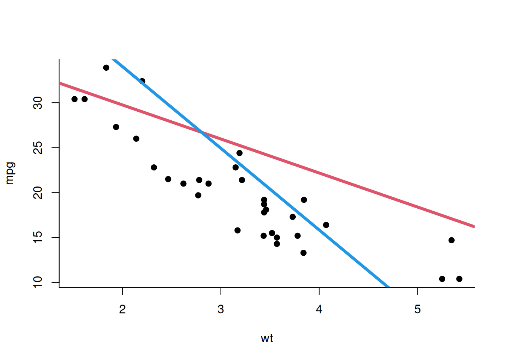

4 Extending linear regression models
We’re continuing to discuss linear models today. I will confess that I like linear models – they can do much more than you might think. As an example, check out this table that shows how most statistical test you may or may not have heard of can be related to some kind of linear model:
https://lindeloev.github.io/tests-as-linear/
One important skill for data scientists is understanding how to adapt linear models to different types of data and different situations. Linear models serve as an excellent standard baseline, and in many situations there’s nothing much to gain by using something more complex than a linear model.
That’s why we have item 6 in our portfolio, where I ask you to fit a linear model to your own data. For this it’s important to finish item 5 – choosing your own data – first. If you haven’t done that yet, please do!
Today, we’ll go over a few examples related to item 6. We’ll fit different
kinds of linear models, showcasing their capabilities as we move along. I’ll do
all these examples in R, because that’s what I know best. You could do those in
Python instead if you really must (although knowing R in addition to just
Python makes you a much more valuable data scientist). However, I’d strongly
advise you to write the model code and loss function yourself, as we do in the
examples that follow, rather than using some convenience library like
scikit-learn. The reason is that we’ll later move on to implement more custom
models that you won’t simply find in scikit-learn. Practicing the general
workflow now, where the models are still standard and you can compare your
implementation to a reference, will make this easier for you in the future.
4.1 Example: Basic linear regression
We’re going to use the mtcars dataset from R in the examples below. This dataset
contains characteristics of 32 cars from the 1970’s. We will try to model the
fuel efficiency measured in miles per gallon (mpg). 1 mpg is approximately
425m/l. We could perhaps expect heavier, more powerful cars to be less fuel efficient.
Let’s first look at the data, and try to model mpg as a function of engine power, measured in “horse power” (hp).

Last week, we extensively discussed loss functions, and we saw how the “standard” linear model uses the sum of squared errors (or equivalently, the mean squared error as in the formula below) as a loss function:
\[ \text{argmin}_{\theta} \frac{1}{n}\sum_i (y_i - \theta_2 x_i - \theta_1)^2 \]
Here we optimize over a parameter vector \(\theta=(\theta_1,\theta_2)\). For more complex models, this vector could be longer.
In a language like R, we would set this up something like this:
model <- function(x, th){
th[1] + th[2]*x }
loss <- function(x, y, th){
mean( ( y - model(x, th) )^2 )
}The function model takes the predictor variable x and a parameter vector
th (shorthand for \(\theta\)) and outputs a vector of predictions, one for each
item in x.
Let’s look at an example using R’s builtin dataset mtcars, which contains
information about (quite old) cars. To predict the fuel efficiency mpg
(miles per gallon) from the engine power, measured in “horse power” (hp), we can bind the loss function to
these variables:
Then we can find the optimal th values by using the general-purpose
non-linear optimizer nlm from R:
## $minimum
## [1] 13.98982
##
## $estimate
## [1] 30.09919435 -0.06823066
##
## $gradient
## [1] 3.647236e-08 1.447731e-06
##
## $code
## [1] 1
##
## $iterations
## [1] 6Hence, my intercept is about 30.1 and the slope is -0.07. So, as we expected, there is a negative relationship between these variables. A useful interpretation of this basic result would be:
- A car that has 100 horse powers (
hp=100) is expected to yield 23.3 miles per gallon of fuel (about 9.9 km per liter). - For each additional 10 horse powers, the expected fuel efficiency decreases further by 0.69 miles per gallon.
Let’s convince ourselves that we’d get the same results with an “out-of-the-box” linear model fit in R:
##
## Call:
## lm(formula = mpg ~ hp, data = mtcars)
##
## Coefficients:
## (Intercept) hp
## 30.09886 -0.06823Yes, this yields the same estimates. From this command we can also get additional information such as p-values and standard errors for the coefficients, which we don’t know how to compute yet:
##
## Call:
## lm(formula = mpg ~ hp, data = mtcars)
##
## Residuals:
## Min 1Q Median 3Q Max
## -5.7121 -2.1122 -0.8854 1.5819 8.2360
##
## Coefficients:
## Estimate Std. Error t value Pr(>|t|)
## (Intercept) 30.09886 1.63392 18.421 < 2e-16 ***
## hp -0.06823 0.01012 -6.742 1.79e-07 ***
## ---
## Signif. codes: 0 '***' 0.001 '**' 0.01 '*' 0.05 '.' 0.1 ' ' 1
##
## Residual standard error: 3.863 on 30 degrees of freedom
## Multiple R-squared: 0.6024, Adjusted R-squared: 0.5892
## F-statistic: 45.46 on 1 and 30 DF, p-value: 1.788e-07But we’ll keep using the more explicit code, which we can more easily modify and understand. In the examples that follow, we’ll apply the same basic setup to binary predictors, multiple predictors, and nonlinear versions of the predictors. But first, let’s see how we can visualize our regression by adding a regression line to the plot:

4.2 Transforming variables
Now let’s see how we can extend our simple linear regression analysis to a few more general cases.
Looking back at our earlier regression, it actually doesn’t look like the regression line fits very well. The data looks somewhat “curved”: in the middle we see that most points are below the line, on the left a lot of them are above the line. In other words, we are mostly “under-predicting” at intermediate hp, and “over-predicting” at low or high hp. Instead, we’d want to see the line go through the middle of the data kind of in most places.
Does anyone have an idea how we could improve this model?
Maybe transform the data.
Do you have a suggestion how we could transform it?
Take the logarithm?
Yes, that’s a common technique (that those who took the class “Data Analysis” may remember). A common reason why a relationship isn’t linear could be that a predictor variable has a log-normal rather than normal distribution. Log-normal distributions are non-symmetrical (skewed) and have many large values. In our example, there are some very big cars with a lot of horsepower but comparatively fewer ones with low horsepower, so there is indeed some skew.
Let’s change our code, and use a log-transformed version of the hp variable. A single change in the model function is enough to achieve this:
model <- function(x, th){
th[1] + th[2]*log10(x) } ## We changed only this line
loss <- function(x, y, th){
mean( ( y - model(x, th) )^2 )
}
loss_mtcars <- function(th){
loss( mtcars$hp, mtcars$mpg, th )
}
nlm( loss_mtcars, c(1,1) )$estimate## [1] 72.64047 -24.78543The model still fits. My question to you is: Is this now still a linear model?
Yes, Because the linearity is more around the parameters for the slope and the intercept so on the variables on the X, on the feature, you can apply any can be any mathematical
Indeed. The important point is: what does the “linear” in linear model exactly mean? Our model is a function of both the data x and parameters th. Previously it was linear in both x and th. Now it remains linear in th but not in x. For the definition of a linear model, what matters is linearity in th, not x. Taking the derivative with respect to th gives a constant, So this remains a linear model. You could use any transformation on x – log(x), sin(x), or whatever you like – it doesn’t matter as it won’t affect linearity in th.
Therefore, I can fit the model in the exact same way as before, using the same quadratic loss function. However – even though the general setup remained the same – since x is now log-transformed, this will give me very different coefficients. These are now 72 and -24.8, rather than 30 and -0.06. The slope -24.8 also has a very different interpretation: If the horsepower of a car’s engine increases by a factor of 10 (=1 unit on the \(\log_{10}\) scale), the efficiency goes down by 24.8 mpg (or 10.5 km/l). Note that for this interpretation to be reasonably simple, it was important to use the \(\log_{10}\) rather than the natural logarithm.
Let’s see how the model fit looks like now:
with(mtcars, plot( hp, mpg ))
x <- seq(50,300)
lines( x, 72.64047 -24.78543*log10(x), lwd=2, col=2 )
Not too bad!
This is called a log-linear model. In fact it doesn’t look linear at all, but remember, it remains linear in the parameters th. This one reason why linear models are much more powerful than many people think. Using a linear model doesn’t necessarily mean fitting a line through data points. Linear models could use spline functions, Fourier series, or other very powerful transformations of the data.
4.3 Using binary variables as predictors
A related case is when we use a variable as a predictor that isn’t continuous.
In the mtcars dataset, there’s for example a variable called am which
stands for automatic – is the gear transmission automatic (am=1) or manual
(am=0)? We could also ask for instance: is an automatic car more
efficient than a manual car? Then we’d be using a binary
variable as a predictor instead of a continuous variable. Again, that wouldn’t
correspond to the simple view of linear regression as just fitting a line
through a point cloud.
What do we need to do to use a binary predictor, compared to the basic case with a (non-transformed) continuous predictor? Nothing special whatsoever.
We just need to change our loss_mtcars function to use a different variable. This is simply a linear regression with no changes at all!
model <- function(x, th){
th[1] + th[2]*x }
loss <- function(x, y, th){
mean( ( y - model(x, th) )^2 )
}
loss_mtcars <- function(th){
loss( mtcars$am, mtcars$mpg, th )
}
nlm( loss_mtcars, c(1,1) )$estimate## [1] 17.147356 7.244948We can also plot this setup:

Although this plot may look slightly strange because we have only two different values on our x-axis, this is still a perfectly fine linear model – as before, it remains linear in its parameters.
What we see here is that the cars with automatic transmission (points on the right-hand side) are more efficient than the non-automatic ones on the left-hand side.
What could the interpretation of these results be? How would you communicate the results of this analysis to a stakeholder? You set out to answer the question: are automatic cars more efficient than manual cars? What’s your answer?
Since we have a positive slope we can generally say that automatic cars are more efficient or at least there is a relationship which suggests so.
So you would say it’s more fuel efficient and you look to say that you looked at which aspect of this but specifically what of the slope?
Oh it’s positive and it’s more than like 0.05.
So you looked at the sign of the slope so in this case the positive sign means higher values on the y for higher values on the x. So if I go higher on x it means going from manual to automatic means I’m going to go up on the y axis making it more efficient. But you also said it’s not something like 0.05 so does it mean that if the slope had indeed been 0.05 it would not be important?
That suggests that the data sets generally have the same mean or same carry counts which it’s not so much about the mean but more the significance involved.
Let’s not get distracted by statistical significance at the moment – this is about interpretation of the slope value itself.
Considering that there’s only two values for the predictor – 0 and 1 – we could say that an automatic transmission car it is 7.245 mpg (3.1 km/l) mpg more efficient than a manual one: a change of 1 on the X axis – going from manual to automatic – is linked to a change of 7.245 on the Y axis.
Therefore, whether the slope value that we obtain from a regression model translates to a n important effect or an unimportant one critically depends on the units of both the X and the Y axis.
Small numbers can be important. Let’s consider GDP growth for example. It makes an enormous difference whether annual GDP growth is 0.02 (2%) or 0.05 (5%), although both numbers seem small on the face of it. Therefore, like any result of a data analysis, a regression needs to be interpreted carefully in the context of the substantive meaning and units of the variables that are involved. In short, you won’t be able to do statistical inference y when you don’t know what the numbers that you are analyzing actually mean (although you may well be able to build a prediction model that achieves a high accuracy without having any clue what the involved numbers mean, and that hopefully illustrates why inference is not the same thing as prediction).
Specifically, when interpreting a regression coefficient, be careful to address both its sign (is the effect positive or negative?) and its magnitude (is the effect large or small)? You could also do this by working through a few representative examples.
4.4 Regression with multiple predictors
Let’s say we want to use more than just one variable in our regression. For example, let’s use both the weight and the horsepower to predict the efficiency of the car. This kind of model is called a multivariable regression model. Suppose we have \(k\) predictor variables \(X^{(1)},\ldots,X^{(k)}\), then the multivariable regression model would correspond to the loss function
\[ \text{argmin}_{\theta} \frac{1}{n}\sum_i \left(y_i - \theta_1 - \sum_{j=2}^{k+1} \theta_{j} x^{(j-1)}_i \right)^2 \]
How could we implement this in our framework?
Again, it can be done with a few simple tweaks. This time, we need to modify both the function model and the function loss. Both now need to take an additional argument. (Note that we could also do this better by allowing x to be a matrix, but let’s keep it simple for now.)
model <- function(x1, x2, th){
th[1] + th[2]*x1 + th[3]*x2 }
loss <- function(x1, x2, y, th){
mean( ( y - model(x1, x2, th) )^2 )
}
loss_mtcars <- function(th){
loss( mtcars$am, mtcars$wt, mtcars$mpg, th )
}
nlm( loss_mtcars, c(1,1,1) )$estimate## [1] 37.32155130 -0.02361512 -5.35281145This model now predicts the fuel efficiency using both the
binary variable am and the continuous variable wt (weight of the car, in 1000 lbs) –
two predictors of different types.
The minimization of the loss using nlm works in the same way because the
minimizer can handle functions of many dimensions (at least in principle).
We have three fitted values now. The first one, 37.3, is still the intercept. The second one, -0.02, is the difference between manual and automated transmission (keeping the weight fixed) whereas the third one, -5.35, is the average decrease in efficiency associated with an increase of the weight in 1000 lbs when the transmission type is kept fixed. The value of -0.02 is especially interesting given our earlier results – just before we said that manual cars are actually less efficient than automated cars. What’s the conclusion of this number here?
That they actually do not differ if you correct the weight.
Exactly! It could be, for instance, that heavier cars more often have manual transmission whereas lighter cars more often have automatic transmission. And once you consider this, the association of transmission type and fuel efficiency disappears.
is this a real dataset?
Yes, it is!
How do you know that this result isn’t just due to overfitting?
That is a very good question, which we’re going to address two or three weeks from now!
Let’s wrap up with a quick visualization of this model. We can think of the model as fitting two different parallel lines to our data: one for manual, and one for automatic transmission. The lines in this case actually barely differ.
We can visualize this result by using two different regression lines with slightly different intercepts like this:
with( mtcars, plot( wt, mpg ) )
# red line for am=0
abline( 37.32155130, -5.35281145, col=2, lwd=4 )
# blue line for am=1
abline( 37.32155130-0.02361512, -5.35281145, col=4, lwd=4 )
And we could summarize our interpretation like this: For two cars of the same weight wt, it barely makes a difference if the transmission is automatic or manual, whereas for both automatic and manual cars, each additional 1000 lbs (450 kg) is associated with a decrease in fuel efficiency of 5.35 mpg
4.5 Interaction terms
One fundamental assumption of the basic linear model with multiple predictors is that the effects of the predictors are additive. For example, consider the model with two predictors:
\[ \text{argmin}_{\theta} \frac{1}{n}\sum_i \left(y_i - \theta_1 - \theta_{2} x^{(1)}_i - \theta_{3} x^{(2)}_i \right)^2 \]
In a certain sense, this additivity corresponds to an independence between the two effects: Any change in $X^{(1)} by one unit will change the predicted value by \(\theta_{2}\), independently of the value of $X^{(2)}; vice versa, any change in $X^{(2)} by one unit will change the predicted value by \(\theta_{3}\), independently of the value of $X^{(1)};
That assumption may not always hold. For example, putting an automatic transmission into a small car might make a noticeable difference on its weight, whereas putting an automated transmission into a heavy car may not make such a big difference on its weight. This dependence of effects of one variable on the values of others is called an interaction.
Generally we implement interactions by taking the products between two (or more) variables and adding those into the regression model. For example, my two-predictor model above would become:
\[ \text{argmin}_{\theta} \frac{1}{n}\sum_i \left(y_i - \theta_1 - \theta_{2} x^{(1)}_i - \theta_{3} x^{(2)}_i - \underbrace{ \theta_{4} x^{(1)}_i x^{(2)}_i }_{\text{interaction term}} \ \right)^2 \]
Again, the inclusion of this product makes the model appear non-linear – but it’s not, since it remains linear in the parameters \(\theta\). In this sense, it’s similar to our variable transformation technique from earlier.
We can implement this model as follows:
model <- function(x1, x2, th){
th[1] + th[2]*x1 + th[3]*x2 + th[4]*x1*x2 }
loss <- function(x1, x2, y, th){
mean( ( y - model(x1, x2, th) )^2 )
}
loss_mtcars <- function(th){
loss( mtcars$am, mtcars$wt, mtcars$mpg, th )
}
nlm( loss_mtcars, c(1,1,1,1) )$estimate## [1] 31.416055 14.878423 -3.785907 -5.298361Now I have four coefficient estimates. Now check the effect of transmission type again, which is in the coefficient -3.7. This again does suggest and impact of transmission type.
However, the interpretation actually gets a little tricky now.
For automatic cars, fuel efficiency decreases by about 3.8 mpg per 1000 lbs of weight on average. For manual cars it even decreases by about 9.1 mpg per 1000 lbs. Although the coefficient for transmission (+14.9) suggests that manuals are more efficient at very low weights, the negative interaction term means this advantage shrinks as weight increases. Around the average weight of cars in the dataset, the efficiency difference vanishes, and for heavier cars, automatics are actually predicted to outperform manuals.
This is probably made much clearer by a plot.
with( mtcars, plot( wt, mpg ) )
# red line for am=0
abline( 37.32155130, -3.785907, col=2, lwd=4 )
# blue line for am=1
abline( 37.32 + 14.88, -3.79 -5.3, col=4, lwd=4 )
As we can see the slopes are not the same, which means they must cross at some point. For our data, the crossover point means that light manual cars are more efficient than light automatic cars, whereas it’s the opposite for heavy cars: heavy manual cars are less efficient than heavy automatic ones.
Instead of taking the product of two variables, for example, could you also take the ratio of two variables.
Absolutely, in principle we could also use a ratio like that to model an interaction, which would lead to a model like:
\[ \text{argmin}_{\theta} \frac{1}{n}\sum_i \left(y_i - \theta_1 - \theta_{2} x^{(1)}_i - \theta_{3} x^{(2)}_i - \theta_{4} \frac{ x^{(1)}_i }{ x^{(2)}_i } \ \right)^2 \]
We could also use something completely different like
\[ \text{argmin}_{\theta} \frac{1}{n}\sum_i \left(y_i - \theta_1 - \theta_{2} x^{(1)}_i - \theta_{3} x^{(2)}_i - \theta_{4} \frac{ \text{sin}( x^{(1)}_i ) }{ \log( x^{(2)}_i ) } \ \right)^2 \]
Obviously, this would become a bit esoteric and hard to interpret. The ratio, however, is still quite easy to interpret. A reason that isn’t used much is simply that it might lead to division by 0 errors.
To summarize: we covered multivariable regression (multiple predictors), nonlinear linear regression (nonlinear in predictors, not parameters), binary predictor variables, and interaction terms. These four items form your regression modeling toolkit and make linear models very powerful, even when data doesn’t look linear. You cannot fit truly nonlinear functions of parameters in this framework, but the linear framework goes extremely far. My advice is: only leave the linear framework if absolutely necessary.
All of these are standard techniques of regression modeling covered in anything from textbooks to YouTube videos, and I invite you to seek out additional explanations to build a robust understanding of these.
4.6 Test your understanding
- A researcher applies a log transformation to the predictor variable in their regression model:
\[y = \alpha + \beta \log(x) + \epsilon \]
Which statement is correct?
- This is no longer a linear model because the relationship is curved
- This remains a linear model because it’s linear in the parameters
- This becomes a nonlinear model requiring specialized optimization techniques
- The transformation invalidates the use of least squares estimation
A student argues: “Linear models are too simple because they can only fit straight lines through data points.” Explain why this statement is incorrect, providing a specific example to support your answer.
Which of the following model formulations includes an interaction term?
- \[y = \theta_1 + \theta_2 x_1 + \theta_3 x_2 \]
- \[y = \theta_1 + \theta_2 x_1 + \theta_3 x_2 + \theta_4 x_1 x_2 \]
- \[y = \theta_1 + \theta_2 \log(x_1) + \theta_3 x_2 \]
- \[y = \theta_1 + \theta_2 x_1^2 + \theta_3 x_2 \]
- In a multiple regression with interaction terms, you obtain the following fitted equation for your model: \[mpg = 37 + 15 am - 4\text{wt} - 5\, \text{am} \, \text{wt}\]
Calculate the predicted fuel efficiency for
- A manual car (am=0) weighing 3000 lbs (wt=3)
- An automatic car (am=1) weighing 3000 lbs (wt=3)
- Consider the same fitted regression model from above: \[mpg = 37 + 15 am - 4\text{wt} - 5\, \text{am} \, \text{wt}\]
According to this model, at which weight does it not make a difference whether transmission is automatic or manual? And what is the relationship between transmission type and efficiency below and above this weight?
- Suppose we have a dataset containing three variables: student grades (g, continuous), hours of study (h, continuous), and semester (fall / spring, binary). Which regression model would correspond to fitting two parallel lines that predict the grades from the hours of study, one for each semester? Write down the linear equation that defines the model and explain briefly.